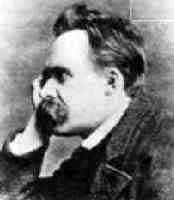
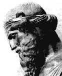
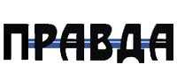

|
我们大家一同看两处的圣经，第一处的圣经记载在罗马书第一章 十八节，我们翻到以后一同来念两次，我先念一次，以后第二次请大 家一同开声来读，罗马书第一章第十八节：
「原来上帝的忿怒，从天上显明在一切不虔不义的人身上，就是那些 行不义阻挡真理的人。」
我们再看约翰福音十六章，我们念十二节、十三节，翻到了一同 开声来读：
「我还有好些事要告诉你，但你们现在担当不了。只等真理的圣灵来 了，他要引导你们明白一切的真理；因为他不是凭自己说的，乃是把 他所听见的都说出来；并要把将来的事告诉你们。」
「你们担当不了」，你们现在不能领受，虽然那些事是真理，但 是你们担当不了。在这里耶稣基督提到了我们对真理领受的程度还是 有限的。而这个限度在时间里面是有关系的，所以他说「现在」你们
担当不了。不但是你们承担的程度有限，在时间过程中间时候没有到 以前，你们不能接受，直到等到真理的圣灵来了，有一位是「真理的 圣灵」，那圣洁的灵是真理的灵，�k来了，�k要引导你们明白，或者
原文另外一个可以翻译的字，就是「进入」，引导你们进入一切的真 理，因为�k不是凭着自己说的，乃是要把�k听见的都说出来。这样， 真理还有更高的源头是连圣灵都要顺从那个源头所吩咐�k的来讲的。
这样，源头把这个真理吩咐交待了圣灵，而圣灵就成为真理的灵。圣 灵是真理的灵，�k引导人进入并且明白一切的真理，又把将来的事告 诉你们。这样，就超现在式的，真理是超时间性的，真理有超历史的
本质，因为真理也包含了那些还没有发生的事情。所以真理的范围到 底多大？真理的本质到底多真？而真理到底与人的生命有多大的关系 ？我们今天要思想的实在是非常非常多的事情，我们现在要开始思想
今天的题目。

我们昨天在这里思想到人是有理性的，这是东、西哲学家所给我们看到的一个很重要的区别。人之所以为人，因为人不是万物，万物 不等于人，而万物中间竟然有一种叫做「人」的生命存在着，而人的生命很清楚的把人的「自己」与非人的「非己」把它分开来。我之所以是我，因为我里面有一个「我」的感应；而能有我的感应的这个人不但在我里面，也在我四周其它的生命中间。所以今天坐在你左边的
，坐在你右边的，坐在你前面或者后面（除非你前面没有人，后面没 有人的），那些与你相似的，与你相同有生命的也叫做「人」。而这些人里面有一个观念和你一样的，就是「己」与「非己」之间的分别
。「我」是「己」，不是我的叫「非己」。在「己」与「非己」之间 有一个很清楚的界线。不但「己」与「非己」之间有一个很清楚的界 限，我对「己」的觉悟是超过对「非己」的觉悟的。这样，当我醒的时候，我清楚的觉悟到我是醒着的。当我睡觉的时候，我甚至不能绝对否认我也觉悟我正在睡觉，你听懂最后这句话吗？连你正在睡觉的
时候你也觉悟到你正在睡觉。虽然这个觉悟是比起你觉悟你醒着的时候是更模糊的。但是这个正在觉悟睡觉的我是不要被吵扰的，所以当 人家打扰你的时候，你会很自觉的说「我正在睡觉不要吵我」。而那个对己我正在睡觉还有一个自我觉悟的那个好象醒着觉悟关连的那个存在的觉悟 The awareness of your own existence. 这种自我存在的觉悟是「我」是人与「非我」不同的那个分界。这个「我」的存在
里面，我对我自己存在的觉悟性里面有一个对我存在觉悟的理解，而这个理解就是人与动物不同的地方， 人是有理性的 (We are rational
beings)，因为我是理性的，你是理性的，所以我们许多的事情不能马上就这样接受的。
|
|
无论人讲了多么多的道理，无论人讲多么多动听的话语，我们不能马上就这样接受，因为我们在内中自我存在里面，有一个很清楚的觉悟，就是「我需要有一些分析、研究、然
后参考、比较、结果有理性的交待，把我所听的接受，需要有一些理 性的交待」， 这种「理性的交待」的责任感， the sense of the rational responsibility
使我做人的时候才不是一个糊哩胡涂的人 。
|
当我需要解释「为什么我是这样」的时候，你解释的时候你是用理性的功能解释了你所领受的，或是你所肯定的一些事情。这样，我们 对人生有一种理性交待的责任感，这个理性的功能是很清楚的是所有
的动物所没有的。这是人之所以为人，人与动物之间很清楚的不同的 地方，而这个不同的地方可以说不是在份量上的不同；这个不同的地 方应当说是在本质上的不同。
这里我把「份量」的不同与「本质」的不同做一个很清楚的分化 。 本质的不同就是 qualitative difference，
份量的不同是 quantitative difference。 ，「三块钱」和「五块钱」其间的分别 是差两块钱， 所以差来差去还不过是钱的量数的差别，
这个叫做 quantitative difference。 但是如果你有两个孩子，他有三条狗， 虽然他比你多一个，但是他与你所不同的是「人」与「狗」之间的差
别， 这个叫做 qualitative difference，而「本质」的差别与「份 量」的差别之间的差别是有差别的。「本质」的差别与「份量」之间 的差别也叫做「本质的差别」，
The qualitative difference is not quantitative difference, the quantitative
difference is not qualitative difference. The difference between the
quantitative difference and qualitative differnce is qualitative
difference. 所以在「本质」差别与「份量」差别之间的差别乃是个「本质」的差别。这样，「人」与「动物」之间的差别就不能用「原子学说」
(Atomic Philosophy)，所谓的「原子学说」 或者「原子论」的哲学家， 包括德谟克拉脱
(Democritus, 460-370 B.
C.)、 卢克莱修 (Lucretius, circa 99-55 B.C.)、 安培多葛 (Empedocles, 493-433 BC)、多元主义
(Pluralism) 的这些人， 这 些西方古代哲学家认为人与人、人与物、物与生物、生物与人、人与 植物、 植物以及所谓的「灵界」所有的差别只有一件事，
就是 the difference in quantity 份量的差别。 那么你问他说，「这个份量的差别是哪一种份量的差别呢？」他的答案只有一样，就是「构成我
们的原子的份量多，那么我们就变成比较重，构成我们原子的份量少 ，我们就比较轻。构成你的原子比较精细，你就比较聪明；构成你的 原子比较不精细，那你就比较笨。」这样，「更粗的原子就产生了物质，更细的原子就产生了人的生命。」这样，他们整个宇宙分别等级
这个原则就是用「份量」来做原则的。但是这种以份量来定原则，以 份量做为所有等级的差别乃是非常愚昧，或非常低级的思想的一种看法。照样的，把整个人与人之间整个社会的构成用「资本论」做为社会阶级斗争的基本原因，那就是共产理论的哲学也是很肤浅的。照样
的推论，把性的关系，性的满足当做是绝对的一个因素来影响人心理的发展，这个弗洛伊德 (Sigmund Freud) 的理论照样是肤浅的。 因 为这些的人都
over simplified，太过简化了一切复杂现象所带来的 可能，而且他们忽略了本质差异是超过份量差异的这个很重要的，很 肯定性的一个事实。所以「人」与「非人」之间的差别，不是份量的
差别；「己」与「非己」之间同样是人的差别，是「份量」的差别， 但是「人类」以及「非人类」之间的差别不是「份量」的差别，乃是 「本质」的差别。而这个本质的差别乃是圣经所记载的，「人是有真
理的仁义与圣洁」（以弗所书：4 章 24 节）。在西方的哲学在东方 的宗教，在东、西文化中间曾经从不同的角度中间片面的寻找到普遍 启示中间的某一些份量，
某一些片断真理 (fragmentary truth) 。 所谓的「片断的真理」就是部份角度所产生的，发现的真理。但是这 些部份或者片断式的真理不能代表完整的、统一性的整个的真理。这
个「统一性的整个的真理」也就是基督教信仰与所有其它的宗教，甚 至非基督教的科学所不同的地方。非基督教的信仰对于真理的认识是 片断式的，是支离破碎的，是非统一的，也是非完整的。但是在基督
教的信仰里面对真理的认识是统一的，是完整的，是整个的，是绝对 的，而且是以启示的源头，真理的本身所带出来的。所以这个也是一 种本质的差异，是完全不同的事情。我想这前面几分钟的话语你们应
当在录音带中间再听三遍到四遍才会慢慢吸收，但是我不要浪费时间 ，因为你的生命不长，我也不长，所以我们好好利用时间就继续再讲 下去了。
我相信你们需要好好把录音带再听，我不是开玩笑的，也不是在推销录音带，因为我不是盼望从录音带争取什么东西，我是盼望争取你有理性的头脑，对真理真正的了解。这样，你们再听的时候去把这些咀嚼，把它慢慢的咀嚼消化了，对你有一些基本上的、完整性的了解产生的改变和影响，不但对你，还对别人。这样的人对真理的认识只可能在神所启示的伟大的信仰里面产生统一性和完整性的肯定，但
是今天我们还没有谈到那个地方以前，我们要提到在普遍的，我不站在以说教者的身份不断的提出信仰的那些教条叫你「信」、「不信」就是这样！我不是这种人。我这一生很清楚的知道神创造人给人理性功能和理性的特权是人之所以是人与动物不同。为这个缘故，在理性功能的过程中间我愿意与你们一同寻找、一同探索，最后与你们一同欢喜快乐明白真理所得到的享受在生命的供应到底是什么。所以，为这个缘故，我站在与你们很有耐性的寻找真理的地步中间把这个过程中间重演一遍，这个是教育里面很重要的一方面。许多基督教的传讲
者，把信仰的结论带出来就走了，而对整个推论的过程没有加以启道式的等候和忍耐，我认为我不应当如此。所以愿意与你们一同站在寻找真理，一同明白真理的过程中间再一次经历理性的程序，以致于圣灵就在这个程序中间照着基督的应许引导我们进入、引导我们明白，
而这个「进入」和「明白」的本身，也就是「信」的一个很实际的表 达，也是「信」里面很实际的一个内容。
我从普遍的观念中间知道我们每一个人都相信真理是存在的。这个对真理存在的「信仰」是普遍的，虽然对真理的范围的解释是人人相异的。你对真理的看法和我对真理的看法都不一样的。所以昨天有
的人就把他的看法提出来，有一些人不敢把自己的看法提出来，就把字典的看法提出来了，你看到了没有？为什么呢？因为他对自己对真理上认识多少没有肯定的把握。但是他对某一种权威比较有信任的可能，就把字典搬出来的时候就比较有「权威」了，你看见了没有？那么那些写字典的人他也一定要把握的写出来，认为他知道的真理是这样的，他写出来的时候，人家不赞成的话他还要收回，为什么？因为他盼望他的字典还可以卖钱，对不对呢？所以，这样，对真理的探索变成普世性的东西了。你盼望你明白真理，我盼望我明白真理，在还没有对明白真理有所盼望以前我们都已经有了一个很重要的前提 (presupposition)， 这样 In our presupossition we presuppose
already the turth is there. 真理是存在的。先在「预想」中间（ 我不用「假设」，因为「假设」的本身已经是包含一个不肯定的答案
），但是我在这里说我们有一个「预想」，而这个「预想」是根据一 个不能分析的、公认的一个真理的本身，也就是「真理是存在的」。 相信真理是存在的这个「相信」本身也是真理的一部份
(To believe the truth is part of the truth itself.)。 所以对真理是存在的 ，有一个信仰是人生很重要的生命力的表现，这个「生命力」是很重要的一件事情。
|
一个人之所以能奋斗，因为他有生命力；一个人之所
以能坚持立场，因为他有生命力；一个人能抵挡潮流，因为他有生命力；一个人能做中流砥柱，因为他有生命力；一个人能够发挥他的潜在能，因为他有生命力；一个人能分析大自然，因为他有生命力，这个「生命力」的存在是一件事实。
|
|
在法国的一个思想家叫做亨利‧贝尔生的思想里面他用一个名称 叫做「 Alen Fetor 」（音译），这个叫做「生命的力量」，这个生
命力量的存在本身是一件很重要存在的基因 the gene of existence. 我存在这里， 因为我里面有一个生命力，而这个生命力 使我的存在不随便被淘汰掉，使我的存在不随便被「无意义化」，就是给人讲到最后变得没有意义了。我这个存在有一个「意义」和「生
命」之间的关连，而这个关连要寻找出那个意义在哪里？要寻找出「 意义在哪里」就先预想，而且有信仰的说「意义是存在的」！要明白真理是什么，就先信「真理是存在的」，因为对「真理存在」的信仰
是生命的力量的一部份，所以这是很重要的。科学家到底是先找出真理才信有真理，或者是先信有真理才努力的去找真理呢？回答！科学家是先信可以找出一些的真实的事情，然后变成公理来教导大家先信有真理的存在才去找出那些物理学、
化学、天文学、.... 其它各种 学问里面的真理？或者说他先找到了才信有真理呢？如果你说「先找到那些理才信」的话，我告诉你，连你都不科学了。因为科学家是站在信的里面，
以信为前提 presuppose the truth is there so he try to make all kinds of efforts
in order to make possible to discover the truth hidden in the nature. 把自然界中间隐藏的真理，隐藏的那些定律，隐藏的原则有系统的把它找出来，挖掘出来，再把系统化的东西变成一整套的在范围中间有各科不同的范围的限制的学问，这个叫做「科学」。科学家之所以是科学家，因为他从信仰做出发点去把真理挖掘出来。这样，「信仰」与「真理」是不能
分开的。如果你说「我要真正合理的事情我才信」的话，你已经先相信这句话是真理了，你听懂这句话吗？如果还不懂，你还不大明白真 理。如果你说「一定要合理的事情我才信」的话，那么你已经先相信这句话是「合理」的，你已经先相信「合理」和「信仰」一定要结合在一起，而且你这句话的本身是还没有真正实验出来的，但你这句话
已经是一个「信仰」了。所以那些说「我不能信」的已经信了什么？ 信「他不能信」。那些说「我不能做决定」的人已经决定了，决定什么？决定「还不要做决定」，你听懂吗？
这样，在前提中间没有一个没有信仰的任何知识论 (Epistemology) 知识论的可能， There is
no epistemological posibility of any system without the presupposition of
faith. 「前提中间的信仰」是成为知识论所有系统可能的原因。 甚至在逻辑推演的过程中间也没有办法完全脱离「信仰」成为「意识」 的基础。 在这个三段论法的逻辑演译里面
(Syllogistism in deduction， 这个是从亚里斯多德开始的 )，那么你要论三段论法的时候，你先把事理推演到结果，从逻辑的过程去定一个定律的时候，
你一定要先有一个大前提，大前提再加上小前提就产生了结论，这个 叫做 Major premise plus minor premise 然后就产生了一个结论
(conclusion)。我做一个很简单很简单的例子，这个例子就是我们常常说的话。比如说「人人都会死的」，你懂吗？好了，你的弟弟说「 懂」，那你对弟弟说「你是人（弟弟是人）所以你会死」。「人人都会死」是一个大前提，「因为弟弟啊，你是人」，这个是小前提，「
所以你会死。」这个叫做「真理」。那么，在这整个推理过程整的三 段中间，syllogism 里面你发现什么呢？第一个前提的本身不是「逻 辑」，第一个前提，就是大前提的本身是一个「信仰」，对不对？「
人人都会死」，你怎么知道？「因为我看我爸爸死了、妈妈死了、叔叔死了.... 就「人人都会死」嘛！」但是叔母还没有死呀， 你老婆也没有死呀，可能你自己没有死呀。你说「大概不可能吧，因为他们也是这样，而且他四十六岁的时候得的病我四十二岁就有了，所以可
能我也会死的。」「可能会死」不等于「一定会死」。所以当你说「 人人都会死」的时候，你是站在一个「非理」的而是信仰阶段中间。 所以连 deduction
甚至 induction 的本身需要有一个前提，而这个前提是「信」的范围，不是「理」的范围。这样，在整个推理的过程 ，你盼望更合理的能达到一个可信的又可知的肯定性的答案，而这个过程中间所有的漏洞是那最基本的前提，因为基本的前提的本身并不是一个「推理」乃是一个「信仰」。
从这个角度来看，这个世界有多少的人冒充知识分子而其实不是真正的。冒充爱好真理的，而其实最基本的动机里面「意志」的功用 和「意志」的因素是超过「理性」的因素。
|

|
尼采 (Friedrich Wilhelm Nietzsche, 1844-1900)（现在在泥土里面给人家踩）Friedrich
Nietzsche，这个人在一个旧货摊里面找到一本书叫做 "The World As the Phenomenon of the Will"《意志表像的世界》，在那本旧货摊的书里面他找到了另外一个与他同国，同做一行的人，另外一个哲学家所写的书，已经给人丢了，忘了，他就在旧货摊里找到一本活的时候没有人要读他的书，活的时候没有人要上他的课，一个没有人认为有什么成就的人，就从那个思想家刺激产生一个火花，引发了一个新的思想，结果他就把整个世界震动了。
|
尼采在那本书中间发现了「意志」的重要性，the will。根据那本书的思想，那本 书的作者叫做叔本华
(Arthur, Schopenhauer, 1788-1860) 这个人 在柏林大学 (University of Berlin) 故意开课要和另外一个大哲学
家叫做黑格尔 (George Wihelm Friedrich Hegel, 1770-1831) 来相抗，分庭抗礼，在他开课的时候，「我也开课，看看你厉害，我比你
更厉害。」结果一开课的时候，没有一个人上他的课，他自己讲。这样一个失败的思想家，竟然在他思想中间影响了另外一个很大很大的 思想家，而那一个思想家（尼采）结果就发明了一个名称，那个名称
美国人半知不解结果就变成了 Superman （超人）的电影。写《超人 》那本书的人是尼采， 而他的意思不是美国这个种 Superman，他的意思是好象是耶稣基督显现以前，施洗约翰怎么样为�k预备在旷野呼喊，等候耶稣的来临，对整个世界的那个大大的改变。照样，尼采认为他就像那个超人的一个前锋
The pioneer of the coming superman。 这样，他为人类的前途制造一条道路，而这个 Superman 一来的时候是完全反对基督教的。所以好象他正在做敌基督的先锋一
样，而尼采的这个思想是以「意志」为中心，不是以「理性」为中心 。所以当他要把「意志超越理性」的这个重要性提出来的时候，他要好好藉用理性的工具来交待，结果写出来要那些有头脑的人来读，读
了以后告诉你「头脑不重要」。现在告诉你「头脑不重要」都要用头脑讲清楚，你还不清楚那你就没有头脑了。告诉你思想不是最重要的 ，为什么呢？一条一条的讲，还是要用思想来表达「思想不太重要」
，「理性」是在「意志」之下，所以尼采就用了这叔本华的思想来建立他的思想体系。而叔本华有一个很重要的思想，他认为许多的人许多时候我们的意志是在我们的理智之前的，所以人的整个理智只做了我们意志的奴才来替意志铺路，替意志制造内容。你要很谨慎你的行动，有许多许多的人他们不是想清楚了才做，是因为他喜欢了就用各样的办法来为他的意志来做内容，你注意看你一生是不是这样？我有时候跟一个人谈话，几句话我就知道他什么东西在控制什么了，他的
动机如何？他的哪一个因素在哪一个因素的上面，很清楚的看出来。 你如果没有这种训练，你做人你不容易看见别人是谁；但是如果你有很严格的训练，你马上知道这个人什么事情在控制什么事情。
比如说，在学校里面你不喜欢一个人，你就做一些规条，而那些规条在制造的中间你心目中就是为了要对付那个人，你懂吗？所以一 条一条讲的都是为了对付那个人。等到三年以后规条定了，才发现你自己的孩子就是犯那些规的，你马上又再改那个规条了。结果你所有想的怎么样运用规条不过是为了你的意志正在驱动你。这样的人很危险，因为他要自己制造网罗把自己绑住。所以一个人一生一世要有一个很严肃的做人的原则，这个原则很肯定了以后他怎么跑都没办法跑
掉，怎么错都不会错得太厉害。你信耶稣以后有没有更聪明？我问你 ，你信了耶稣以后如果没有更聪明，可能你的牧师有毛病，不要笑， 可能你自己有毛病，你要重头审察你的信仰和你自己理性生活的关系是什么。
好，我们继续再讲下去。当意志正在指挥理智的时候，理智就变成了意志的奴仆了，而理智却大发挥它的功能不知道他本身是站在被利用的地步。许多时候你先定下了，然后你才找理由来替自己解围。
所以人家问：「为什么你这么做？」「嗯，因为第一、.... 第二、 .... 第三、....。」 那些根本不是理由，因为你先定下了意志做为理性的支配方向，然后理智才做意志的奴仆做它爪牙的工具，这样的
人是很危险很危险的。但是我告诉你许多许多人实实在在一生一世是 过这样的生活。那么，如果一个人的理智不是站在最高的指挥台来引 导他的感情和意志的话，这个人很可能一生会糊哩胡涂会自我矛盾，
自我冲突，自我抵销，自我冤枉路跑了一大堆自己不自觉。所以我们在这里看见了人应该好好发挥他的理性功能。
这个 Cosmic reason 是运行在宇宙中间的那个大理性， 而人里面的对 Logos 可能的了解里面，这个叫做
Logikos 小理性。但是这个小理性与宇宙之间的理性之间的关系是什么？他们没有办法解释。 所以冥冥之中对这两件事的了解和盼望产生的关连其中真正关系的原
因和破离的原因没有办法找到。所以他们认为人好象是那个宇宙理性 支离破碎的碎片，正像你现在倒一杯水，走的时候有一些就流出来了 ，那些流在隔壁的一点一滴的东西原是从这个母体出生的，而这个与
母体分离的那些碎片的本身就有与母体相同的本质，但是所不同的是 失去了关连，你明白这个意思吗？那只有等有一天归回母体的时候才 能找到自己的方位，还没有找到自己方位以前，乃是一个孤独的碎片
。所以每一个人好象在宇宙中间是一个孤独的碎片，这个孤独的碎片 因为有了与母体相同的本质，所以我们会思想。我是有理性功能的小 碎片，你是有理性功能的小碎片；我这个小碎片和整个宇宙的理性的
母体是有关连的，但是这个关连在哪里我不知道，所以我就过着一个孤立的碎片的自我存在的生活。
|
这个到了二十世纪就变成「存在主义 」所说的 Every existence is an
isolated island. 你是一个孤独的岛，我是一个孤独的岛，甚至于两个人结婚了，在一起生活，在一
起睡觉过了几十年还是两个孤独的碎片。所以你不能讲通我，我也不能讲通你，我一直要你了解我，你一直要我了解你，但是我越了解你
越不能了解你，你越了解我越发现我越难了解。
|
|
所以结果这些孤独的碎片本身就自己产生一个整套性的知识，用自己的理性盼望解释整个宇宙 (Try to
comprehend, try to understand the total universe.) 那以自己的碎片做母体， 做本体去了解整个宇宙，这怎么可能呢？但是人就在这个矛盾中间过了一生，到最后死的时候还没
有解决理性与真理之间的关系，然后盼望死了以后归回母体。这样， 结束了这一生孤独存在所遇来的痛苦紧张关系和自我抵销片断真理的 不关连和那个存在的孤独感，这个是真实的情形。但是虽然如此，因为人是唯有盼望归回母体的那个
Logikos，所以人在万物中间还是最高的。
这样，从斯多亚派的思想来看，人之所以为人，因为人在一个很高的层次里面，在他们的层次观念中间最低的是「被动界」。什么叫 做「被动界」呢？就是「物质界」。所以物质界是一个完全被动的存在 (the passive existence)，因为物质是被动的存在，所以物质是静止性的，是 steady。物质界是
steady 是 non conciousness, no self awareness. 不可能有自我存在，不可能有自我存在的觉悟。所以虽然存在，却没有对「自我存在」觉悟的可能。这样，物质界是完全被动而消极的，静止而无能的，这个叫做「物质」。
但是在生物界中间我们看见进到第二层，所以在生物界中间我们看见有「感性」的存在。所以「物性」是最低的，但是「感性」是超 过「物性」的。感性之所以超过物性，因为感性产生对于伤害它一切行动有所反应。所以这个反应越高的就因为感受越强，而感受越强的
，就感觉到痛苦越深。而感受越强的，很可能就是最高超的存在的形 式 The form of existence is
higher and higher when you have the more conciousness of the suffering and
can response more sensibility. 你把一把刀砍在树上的时候， 这棵树摇一摇，它静下 来，就流了一些没有声音的眼泪，那个叫做「树胶」，对不对呢？但是你拿一把刀还没有砍到狗头上的时候，它「汪」一声就跑掉了。这个敏锐是从它的视线和它想象中的危机和本能的逃避很快的反射出来
了，这个就是一个有感性的世界。在有感性的世界的中间，所有的活 物就比没有感性的物质界更容易保护自己。有感性的世界中间与本能连在一起就与生命发生关系了，所以这是有生命界的第二范围，在有生命界的范围就比物性更高了。但是，斯多亚派说人不但有「物性」
有「感性」，人还有「理性」。所以人的理性不是单单觉悟到自己的存在，不是单单反应那些对自我存在有所威胁的动作而已，他还需要了解我与我以外的一切，甚至了解我自己是什么？所以这个对理性的存在从哪里来的？很清楚的，斯多亚派没有交待，但是斯多亚派很清楚的告诉我们「人是最高的」。
这样，在有限界能看见的范围中间，人是有理性，所以人与万物不但分界了，而且高过各界。人会思想，人会思想关于「我」的问题 ，思想「非我」的问题，思想「物质」的问题，思想「科学」的问题
，甚至思想「真理」的问题。这是表示用「抽象」的思想，思想了抽象的「非物质」的存在。而这个所谓的「真理的本身」不是单单物质界的，因为真理的本身范围是高过物质界的，而真理的本身不能用物质界的范围去定方位，或者测验它的存在，或者测量它的大小重量。
「真理」是不能测量大小或是重量的；「真理」是不能定它的方位的 ；「真理」是不能眼见看见的。这样，真理的存在是一个「信仰界」里面的东西；真理的存在如果是一个信仰界里面的东西，在物质界里
面没有办法去衡量出来的话，我竟然在思想里面想了关于真理的问题 。 这样，「思想」的本身就是超物质的， the
thought itself is supera material 因为思想的本身是超物质的，所以这个「思想」和我的存在就关连到我能思想的意义在哪里。这样，人是很高超的。但
是这个理性的高度高过所有的生物界，高过所有的非生物界；理性的程度使我们与万物有所分别，这个理性从哪里来？理性的内容怎么达到？理性怎么肯定真理？完全在哲学界里面还是没有答案的。
|

|
我们再思想比斯多亚派更早期的一个思想家，也就是亚里斯多德的老师叫做柏拉图。柏拉图不是把「物界」与「非物界」分开，乃是把人自己的生命再分开了。人自己里面就有三界，人自己里面就有物性的存在，就有感性的存在还有理性的存在。所以人的本身里面就有物性的叫做「身体」；人有感性的叫做「感情」；人有理性的叫做「
思想」。
|
所以这个是不是凑巧的被人所了解？我认为不是，我认为这是神创造的奇妙。上帝造人的时候就把头脑放在很高的地方，你看到 了没有？如果你的脑在这里，你的心在那里，会发生什么事我是不明白的。但是我相信不需要多多去考虑那种可能，因为根本不可能，而神已经这么造了。所以上帝把我们器官的安排都相当含有某一种方位意义的价值观去把它定下来了。柏拉图说，「一个最粗俗的人，或者最野蛮的人是以「意志」统治一切的，但是比较高一点的人是用「感情」管理他的「意志」的，最高的人是用「思想」管理感情和意志的
。」如果我们现在把人分成「感情」、「理性」、「意志」的话，柏拉图也有这样的观念，但是他的意志根本就在腰里面，感情在胸里面 ，而理智在头里面。理智用什么？就用头脑来做这个代表，感情用心脏来做代表，而意志他是用性欲来做代表。这一方面在近代的心理学家里面不是完全同意的。但是在柏拉图中间意志的中心就是「性的欲念」，而感情的中心就是「心里面的感受」，而思想的中心就是「脑袋的功用」。照柏拉图的思想，一个用性欲来支配一切的人，他因为要满足性欲，他的爱是为了性欲，而性不是为了爱；他的思想是为着他所爱的，他就要去思想，而不是他所思想的决定他应当爱什么。这样的人是从下面支配到上面的，那是很粗俗很低级的人。一个正人君子是以思想来引导感情，再用感情来引导你一切的意志和行动。所以
你所行的，你所要的，你所爱的最后你想清楚了没有？用你的理性去支配整个人生的人是高级的。但是最后就停到这个地方没有下文了。 所以我虽然在每一堂我的讲学里面把一些很重要的中西古今哲学提出
来，我的动机不是介绍哲学，也不是告诉你我懂哲学，我不必告诉你我早就知道我懂哲学了，而且我懂很久了。但是我要告诉你的是什么 ？我要告诉你的是没有一个哲学体系是超越上帝所启示的这本圣经的
。如果你以为你在哲学的体系里面已经找到了真理，我告诉你，你是大大搞错了。有没有搞错？有，搞错！你如果在哲学里面已经找到了真理的话，你是自己欺骗自己，因为你把整个哲学体系谈到最后的时候，你发现不过是刚才我讲的，是「支离破碎片断式的了解」，是一个不能统一，也不能整个性的关连的那一种支离破碎的了解。
柏拉图的思想这么伟大，以理性管理心思意念和性欲，这个人他行动是受到对智能的了解来支配的，这是伟大的人，这是有思想的人 。我刚才提到叔本华的思想告诉我们很多人不是如此的。如果真的你可以做到像这样的人的话，我还要问你，那你的头脑受谁支配？这是哲学没有办法看到的。所有的哲学没有办法看到还有比头脑更高的支配力量。那你说「斯多亚派的哲学不是提到有宇宙理性吗？」这个宇宙理性所代表的这个字是不是他们所讲的？在上帝的启示里面亲自告
诉我们这就是「道成肉身」的基督。相反的，如果我们用基督教的眼光来看，在基督的生命中间给我们看到整个生活指导的最高标准，�k是活生生的表达出来了最大的圣洁、公义、良善、真理和智能、能力
，最大的道德生活表达在他整个历史的见证里面。这个在历史中间见证了良善、智能、圣洁、公义、美德的这位基督，如果以�k成为我们思想的模范的话，再用这个道来管理头脑，那就好得不得了了，这是
基督教的信仰与所有哲学还不同的地方，感谢上帝！这样，我们看到 了，无论是西方的，无论是东方的，对理性，对心性的了解，到结果 还是和真正的源头没有发生关系。那现在，我刚才提到了，我们虽然
不能肯定真理是什么？以受造的，堕落的，和已经犯罪受到玷污的人的思想想出真理到底是什么那是不可能的。那么我们却相信真理是存在的，虽然不知道这个存在的真理到底是谁？但是我们相信真理是存在的。就因为这个对「真理存在」的信仰，所以科学家开始了他们的研究，伟大的教育家开始了他们的教导工作，母亲不辞劳苦的把孩子养大，因为她相信真理是存在的，意义是有的，生命是有价值的，所
以她付代价、奋斗。就因为真理是存在的，所以政治家盼望把他们的理想付诸社会的现实里面。因为相信真理是存在的，所以我们看见了所有的奋斗成为一种社会的动力，也变成可能了。但是，只有人有这种对真理的了解和需要，虽然真理的存在不能让我们凭着分别的、个别片碎性的理性来去自己做一个主观的肯定，因为这会产生破坏大同
性的个人主义。所以，你所认为的「真理」可能就是我所认为的「非真理」。而我所认为的「真理」可能就是与你完全格格不入的你所抗拒的「非真理」。所以怎样否定，怎样可以减少，怎样可以预防个人的主观主义破坏整体性的真理观念呢？那，基督教提出来的和世界上哲学提出来的，不同的地方就是基督教提出了一位有位格的上帝是真理的源头， The personal God is the source and self of the truth。 我再讲一次，基督教的信仰提出了一位有位格的上帝是真理的源头。这个真理的源头就保证了真理的统一性，大同性，普世性和
永恒性在那里。这个关于真理的源头和真理本身的本质到底是什么？ 我们就要更严肃而且更慎重的去把它推演出来。但是，支离破碎式的片断式的生命、孤独存在的自我个人能不能从这个出发点去想出普世的真理，永恒的真理是怎样的呢？这是不可能的。所以基督教提到了这个真理的源头产生的「自我启示」成为结束各样的个人和个体的真理主观性的争辩，止住了争辩，使我们在启示之中蒙受光照的可能。
所以在这两件很大的事情上我个人看见基督教真理的伟大性是本质上 差异而超越了所有的哲学体系和其它的宗教。我们相信有真理的本体 ， 我们相信真理的本体是自我启示的
We believe in the reality of the truth himself and we beleive alos the one
who share initiatively the truth of in the revelation to men. 这样，神 的自我真理本在和神的自我真理启示就成为我们信仰的一个很重要的中心。但我刚才说我不愿意把独断式的教条就这样的当做结论提出来
，所以我还要与大家同从头再好好再探讨有关于这方面的事情。
|
我们接着继续思想到真理到底是什么？有一个简单的比喻来嘲笑
《真理报》常常不报导真理的事情。《真理报》敢用《真理报》来做这个前题乃是他们真正信仰真理是存在的，否则没有《真理报》对不对？
|

|
他盼望人家相信他们所写的就是真理，正像《人民日报》盼望人 家相信他是为人而写的。但是，是不是名叫《人民日报》的就是真正为人民写的呢？名叫《真理报》的真正为真理而写的？这个你不想可以自知的，因为每一个人都在支离破碎的独立主观的个体里面把自己绝对化了。但是，虽然把自己绝对化，或者把真理强断独有化，还不能否定说真理本身是存在的，绝对本身也是存在的。如果绝对本身不存在的话，如果真理的本身不存在的话，那么我们连这个名词讲出来都没有意思。所以有一次英国的一个科学会议在十九世纪举行的时候
，有一个老科学家他又是科学家，又是社会学家，又是散文学家，又是思想关于进化论的支持者， 这个人叫做史宾塞 (Sir
Herbert Spencer, 1820-1903) 他在其中站起来很严肃的讲「 I believe there is nothing
abslute in the world. 」（这个世界没有绝对的事情）。他讲完了，凭着他的威风和他在社会上的知名度他就很权威的坐下来以为真理已经表达很清楚了。
「 I think there is nothing abslute in the world. 」他坐下来了，一个青年的科学家就站起来了， 很严肃的追究他说：「
Mr. Hebert Spencer did you say that there is nothing abslute in the world? 」「
Yes, I did say it. 」「 Do you believe that theory? 」「 Do you believe your
own statement that there is nothing abslute in the world? 」「 Yes I believe
it. 」这个青年人再问更严肃的一 句话： 「 Do you believe it
abslutely? 」「 Um...I believe
that... 」「 You believe abslutely that there is noting abslute? 」你绝对相信没有绝对的事吗？如果没有绝对的事，
你怎么可以很肯定的把你这个「没有绝对的事」很绝对的把它表达出来？ 你明白吗？所以当你正在肯定一件事的时候，当你正在绝对化一件事 的时候，你的「内容」可以否定绝对，但是你的「绝对态度」已经站
在肯定绝对了。你用肯定的态度来否定你认为你可以利用的肯定，而 你理论上否定了。如果你把这个违背逻辑的所谓「逻辑」看清楚了， 青年人就不会血气方刚常被人利用了。
GC党是相信「唯物论」的吗？我竟然发现他所有的手段都是「 唯心论」的手段，你明白吗？西方是走唯心论有宗教的吗？西方整个的行动是为了物质是为了金钱而前进的，他们的目的是唯物论的。所以唯物论的理论宣扬者的内心中间有唯心的方法论；在唯心的信仰中间竟然有唯物的实践论。这样，我们看见了反对绝对者他们反对的那么厉害，就表示他们相信需要用「绝对精神」去反对他们所讨厌的绝对论，你明白吗？我盼望你绝对明白。
有一个人对我说「我很反对学位」。我说为什么？「因为根本学位不重要嘛！」我说「我很赞成学位不重要。但是我要告诉你，因为学位不重要，不重要到你不需要反对，因为没有人需要反对很不重要的事情。」你还不懂？很简单的事情。我不知道今天有多少的基督徒好好的利用你的头脑、理性、逻辑曾经经过很严肃的锻练。我们说我们是「知识分子」，我看看这些知识分子不知，不识，不份，不子。
许多在美国研究到原子能博士的，物理学博士的，天文学博士的，结果我看他除了那一门懂一些东西以外，整个整个性，统一性的真理没有清楚。
有一天我在纽约讲完道出来，看见一个人在推一摊的生力面，你们叫 instant noodle. 另外一个牧师说「唐牧师我给你介绍，
这是某某人博士，他是哥伦比亚大学毕业的原子能博士」。我说「你现在在做什么？」「我在卖面。」我心里想「多么可惜，这个人只要把他的十分之一带到东南亚去就可以在许多知识分子中间影响很多的人。
」真的是「知识分子」吗？你的知识是片断的，某一个自然层次的一 部门，或者你的知识和整体性的智能和生命的真理了解完整的打成一 片？你以为所有的哲学已经给人带了真理的了解吗？你以为你相信真理的存在是真正就是完整的吗？没有一个哲学体系能带到完整的真理和统一性的智能里面，除非你需要另外一方面，就是在神所启示的道里面产生完整的信仰。
|
|
个莫斯科的《真理报》一天报导世界汽车大赛成绩揭晓，但是你注意听下面几句话，我不要讲太长，只有几句话：「世界汽车大比赛，结果美国得到最后第二名，苏联得到世界第二名。」所以苏联车得到亚军，美国得到从最后倒数第二名。你知道那个报导的基本是什么呢？不过是因为两部车比赛。
|
这两部车比赛，一部是美国车，一部是苏联车。美国车胜了，苏联车败了。他报导的时候，因为《真理报 》一定要报「真理」嘛！所以就报导美国拿到世界最后第二名，而苏联得到全世界第二名。
我现在问你，他讲的是真的是假的？真的。有没有一句谎话在里面？没有。我再问你，他讲的是不是真理？他讲的是真理吗？好，我 再问你，他讲的是不是事实？是。所以第一方面，「真理」是什么？
我们现在给它下定义，昨天你们有很多定义，现在我们来下定义。第 一、真理是事实。所以刚才一位弟兄说「他讲的是真理」，我也没有说「对」，也没有说「错」，因为真理包含「事实」这一方面，但是事实本身不包容整个的真理，阿们？可以接受吗？真理包含了「事实
」这一方面，但是事实不能包含整个的真理。为什么呢？因为这两辆 车比赛本来是「国际」，因为两国之间所以叫「国际」嘛！对不对呢 ？美国实实在在是最后第二名嘛，而苏联实实在在从头第二名，没有一句话是错的。从事实来看，这个报导完全是根据事实。但是，这个报导如果说就等于这个事实，这个事实就等于真理的全部的话，我们会否认的。为什么呢？因为在报导事实的中间，有另外一个意志做动机来左右来把这个报导不完全讲出来。所以这个事实里面还有一些没
有讲出来的东西也是真理的一部份。所以第一、真理是事实而大于事实 Truth is fact but also
bigger than the fact. 真理是有事实的成份，但是真理大于事实。那么 What is lacking? 什么东西在这个报导中间丢失了呢？就是那「诚实的动机」不见了。他不敢说「美国第一，苏联第二」。他说「美国最后第二」，把「第一」讲成「最后第二」，而完全没有与事实冲突，这是技巧大得不得了的。因为接受报导的人根本不知道那个事实的全面。接受报导的只有接受事实的片面。所以片段真理、支离破碎的事实和非统一性的某个角度的事实本身是很危险的。
所以 The Partial turth is not truth, the partial turth is not equal to the
total turth.) 部份的真理不等于完全的真理，我们要很谨慎。
部份的真理可能与完整的真理不冲突；部份的真理也可能故意被 利用当做完整真理的仇敌，这是政治家玩弄手腕中间使你无法抓到他 毛病的那个所谓「属世的智能」。而你们青年人在有基督信仰的生活中间不要效法这种智能，因为这种智能是灭亡人的智能。许多的青年
人就败在不是仇敌手中，败在自己的小聪明的手下。你们看过这样的人吗？他的小聪明所用的都是真的，都是事实，你抓不到他的毛病。 有许多的法律专家，许多的律师为利害的关系遮盖了是非，他们竟然可以从法律与法律，规条与规条的中间找到了空隙，以致于在法与法中间犯法免于被罚叫做「法律专家」。一个「法律专家」可以在法律与法律之间找到了违背法律的空隙做犯法的事情结果不必被罚，能够越多这样做而不必犯法的越是叫做「法律天才」。真理包含事实，但是真理不等于就是事实「而已」，真理大过事实。
从这个简单的例子我们看真理进到另外一个范围里面，那就是事实背后有一个动机的问题。动机的「正」、「误」和事实之间的关系又牵涉到整个的真理的表达。所以，动机的「正」应当被列入真理的一部份。这样，基督教的信仰不是单单提到你「做了些什么」，上帝
要看你「为什么做」，比你「做了什么」还更要紧。如果你「为什么做」没有正面的支持，你做的很成功在神眼中还是不成功。在圣经中间所记念的圣殿被建成功的一共有三座。另外一座是预表，还有一座
是预言。所以预表就是在有形中间的以色列的会幕，预表就是以西结书里面所讲的未来的殿的情形。而在「预表」与「预言」的中间已经曾经用过的暂时的会幕和未来的伟大还没有建成的预殿中间我们看见三座曾经建过的殿。第一座是所罗门的，第二座是所罗巴伯的，第三座是希律王的。所罗门的殿建了七年才成功，所罗巴伯的殿建不太久
，因为很小，但是希律王的殿建了一共多少年等一下我告诉你。当耶稣在世界上的时候他说「你们拆毁这殿，我三日内要再建立起来。」（约翰福音：2 章 19 节）他们大发脾气，马上就听了人的话没有清楚知道是什么随便反应，这种人是笨人，你懂吗？许多时候我和一些人谈话没有耐性，因为还没谈他已经有答案了。而他的答案先误解我产生错的答案，我就不爱讲了。犹太人说：「我们这个殿建了四十六
年，你怎么可以把它三天里面就建起来呢？」（参：约翰福音：2 章 20 节）四十六年，那个时候大概是主后三十年。 这个殿到耶稣升天以后继续再建，再建三十四年才成功。所以四十六加三十四多少？八十年。什么七十年？算数这么差还参加我的讲座。四十六加三十四是八十年，你知道吗？到主后六十四年才建成功，刚刚建成功以后六年就全部被烧掉了。表示什么呢？神并不看重你伟大的成就，你明白吗
？「希律王你为什么建殿呢？是为了敬拜我吗？」不是的，你是拉拢百姓的宗教心理使他赞成你的政治思想，你明白吗？你为我建殿吗？ 你建得这么荣耀，这么大，我已经看见你的心是为你不是为我，你没有敬畏我的心。所以在教会的工作上，注意，不要以为你奉献钱多了
，快快得到一些钱，快快把事情做成功了，很伟大，神可以给你用八 十年建以后四年就把它烧掉。如果你很清楚看见圣经神的威严和原则 ，你不能随便太快做事情，不能太急的，你要以神的永恒性，神的宝座为你敬畏的一个内容，然后你好好行出来。
好，「动机」应当被列入真理的一部份，这样我就请大家注意在这两个字的后面有很不同的范围正在跳出来。在事实的背后是物质的现象，在动机的背后是心灵的现象。所以如果把真理只概括在物质界的话，你所能认识的不过是科学。我得讲一次，如果把真理只概括在物质界的范围里面的话，你所认识的不过是科学。我再讲一次，如果把真理只有包括在物质的现象范围的事实的 Data 里面的话，你所认识的真理不过是科学的范围而已，那是很低的层次 very low sphere 。我相信近代的知识分子很不愿意我讲这一句话「科学的知识，科学的真理是很低级的一个层次。」你说「就是因为你不是读科学的你就看不起科学家，岂有此理这个传道人！」我告诉你，不是的，我不是单单对你们新加坡人这样讲，我对那些科学教授，科学院的院长讲同样的话。在美国有一次我的讲道里，有一个人对我说「你知道今天来
听你讲道的有多少人是博士吗？」我说「我不知道。」他说我们这间教会有七十四个 Ph.D 在听你讲道。还有一次我在美国西岸一个很重要的高级知识分子聚集的地方讲道，九百个人来听，他们对我说大概三分之一是
Ph.D 另外三分之一是 Matser degree，其它的正在大学念书，而且可能是 Graduate School。我不是信口开河，我不能随便讲我体会对的就随便讲。为什么把科学放在很低的层次里面呢？因为科学所要发现的事实，完全只在物质界的范围里面。而这个物质的范围在圣经里面是为了人而被造的。因为物为人而造，而人就变成物的主人，而物就变成被人使用的工具。人把物质当做人所使用的工具，
人本身是高过物，人成为宇宙之主而宇宙成为人下面的一个使用工具 。这样，对物的了解只有产生物质性的事实，物质性的事实所带出来 的是科学的范围，而科学范围在物质界里面是低的。
|
这样，如果你现在能用某一种化学成品和另外一种化学成品造成一种刺激人性欲的迷幻药，你能造出那种很高级的、很低的成本产生很大的刺激作用，甚至混乱人的思想和情绪的那种药物，刺激你肝里面的化学功能以致于你变成迷幻的，你是科学家。但是，当你用这种物质的知识制造一种混乱人的生活以致于败坏社会的道德和毁灭了那个人的前途的话，你的动机是不科学的，你明白我的意思吗？
|
|
你用的方法，你的成就是科学的，是「事实」，是「自然科学」的一部份，可以算是「部份的真 理」，但是你这个人的动机，你做出来的东西是危害青年人的，使青年人受毒，使青年人迷幻，使青年人放纵，使青年人毁灭他们的前途
，你的动机不好，这个已经不是生理的和物质界的，这个已经跳出来 进到心灵界了，这样，你的动机是「非真理」的。所以我说，第二个范围已经跳一个层次出来了。
真理如果单单只是在一个范围里面，那个真理是太过肤浅的。跳到第二个范围里面我们看见马上就牵涉到第三个范围，那就是关于伦理的问题了。因为「动机」在里面，我们看不见，神看见了。但是这
个动机借着物质把它表达成行动的时候就产生了社会位格与位格之间是不是「合理」和「不合理」的行为问题。行为问题合理不合理这叫做「伦理」。人与人之间的伦次，人与人之间的五常照孔子的社会结
构五个大关系就是君臣、父子、兄弟、夫妇与朋友，这个君臣、父子 、兄弟、夫妇、朋友五个关系中间人伦之间的关系应当以「德」来彼 此相效，以「德」来彼此相关。这样，人伦之间的关系是也有道理，
这个叫做「伦理」。如果真理只不过是科学的范围的话，这对真理的了解和界定是太低级了。真理进到「动机」里面就已经有一个心灵的主观性的感受和与真理之间的灵界的关系。当真理产生行动的时候就
变成伦理界的道理了。所以「真理」不是单单是科学的，真理不单单是哲学思想界的，真理也在伦理范围里面的范畴问题，「可以做」，「不可以做」；「应该做」，「不应该做」，这应当包括在真理里面。
能做一个原子弹，这个叫做「科学」，做了原子弹「可以不可以用」？这个叫做伦理学。怎么可以说「只要懂科学就懂真理」呢？怎么可以说「不管伦理的问题，这个不重要」？
新加坡政府在这二十年中间继续不断再寻找怎样可以使新加坡变成一个强国。最后感觉到应该「少生孩子」比较强，结果过了几十年少生孩子，这么少的人越来越老就变成比较「老」，老了以后就越多生孩子，才再给你赏金一点，所以这个是在变化的程序中间还没有找到最后的真理的一个表现，你看到了没有？那每一个时代有一个新的条例出来「应该这样」、「应该那样」的时候，心中盼望「那样更合理」，但是更合什么理呢？更合什么理的那个「什么」还不知道。所以到底人类要经过几千年的经验才明白整个性的真理呢？因为人不愿意马上接受所谓「主动启示」所带下来的信仰真理。所以经过了三十
年以后GC党才在中国开始讲一句从前很少讲的话 -- 「实践是检验真理的唯一标准」。换句话说真理在过去他们的观念中间是存在的，
那怎么样去肯定那个真理是可以被鉴定是真的真理呢？还要用「实践 」。但是实践真理的人本身是不是就等于比真理更大呢？那是个很大的问题了 Which one
should subject to which one? 哪一个应当服在哪一个的下面？
我们谈了这么许多，我们已经发现了真理是有生命者才会想到的 ，而有生命者中间不是所有的有生命者都会想到真理的，只有人才会想到真理的。所以真理似乎是唯有与人才有关系的。但是在「与人有
关系的」这件特殊中地位中间， 我们看见人不能垄断 We can not monopolise。为什么？因为许多违背物理定律的动物都要死在违背物理定律的恶果之下。相反的，那些与人有关系的真理与动物也有关系
。你吃错东西你会肚子痛，这个要表示人会思想真理，而真理和我的生命有关系。但是老虎吃毒也会死的，所以他也不能逃避那个理，那个理也正在控制着它，但是问题是控制它的理是它不明白之理，而控制我之理是我要明白之理。所以我要明白这个理，就表示生命在人里面有与动物不同的地方，因为我们是能明白理而甚至要发现理，然后好好运用理的。明天我们要继续思想在人的生命与「理」
-- 「真理」之间的了解中间，乃一个大哪一个小怎样去处理。我想这个事情本来我以为一、两次可以讲清楚了，后来发现越讲越讲不清楚，因为真 理太大了。昨天国大的一位教授在这里楼教授，他说「唐牧师（他在六年前在康乃尔大学念博士的时候我去他们那边讲道，他已经听过我讲这一篇了，是简短的，那时候我是用一天的时间提到这个题目，这次我用四天讲这个题目，四天够不够？还是不够的，但是我慢慢引导你们的思想，使你们更明白这方面的道理。）」
我们第四样要看见的是「真理」与「次序」是有关系的。「次序 」就包括了「时空」的观念，「先后」的问题。所以孔子《大学》这本书最开始就提到了「知其先后则近道矣。」表示要靠近真理的原则
，你要明白「事有始终，物有本末，知所先后则近道矣。」表示「次序」是很要紧的事情。什么「先」，什么「后」，是不是这样？应该不应该如此？次序关系如何产生？这个「次序」和「关系」明白出来以后，你会把真理安排得更好。所以明天我们要提到了关于理性的架
构 the structure of epistemology。我们知道了理，而这个理在哪一个层次中间进上去的？明天我会提。我们还要思想到与真理、生命
关系中间那一个层次怎么样发展，然后怎样在信仰中间交待理性所不 能了解的事情。
我们今天就先谈到这个地方，我们低头祷告：
「主啊，我们感谢你，你的灵一步一步引导我们的头脑，一步一 步光照我们的思想。我们感谢你，你创造了我们，我们是按照你的形 像而被造的。主啊，你把理性放在我们里面，使我们思考、追求、测
透、我们也要了解，甚至照你的应许使我们进入真理。求你帮助我们 给我们在思想的过程中间有一个愿意被你的灵引导顺服的心。主啊， 给我们不要在个别的，片断的，主观的狭窄的个人思想里面绝对化自
我以致于与你更脱节了。求主帮助我们，求主加添我们力量，帮助我 们建立你所喜悦的信仰系统在我们的生命中间，更让我们很有次序， 很有条理的帮助那些与我们同样长大却在黑暗中间摸索不愿意明白真
理的人。主啊，求主听我们的祷告，感谢赞美奉主耶稣基督的名。阿 们。」
当我很年青的时候（现在也差不多年青），我非常盼望有人和我 一步一步引导理性到真理的了解。但是我很严肃的告诉你，没有人， 一个都没有人这样的引导我。所以有时候我会为你们这一代的人产生嫉妒，我也为你们这一代的人产生可惜，因为你们中间有很多很多的人没还有来参加这样的聚会。原谅我说一句，你跑到美国去，跑到英国去要找这样的讲座，这样的讲法，讲的内容是这样的，你很难找到
，因为其中还有很多的东西在书里面还没有的。经过几十年的思考、 挣扎、痛苦，把这个系统整理出来，盼望在我还没有死以前对这一代有一些交待，而新加坡的讲座，你们说很多人了，对我来说很少。你
说「因为我们这里基督徒本来很少」，那更不对了，因为这个讲座不 是单单对基督徒讲的，对非基督徒还可以讲的，因为你是人，所以你 们祷告求主帮助我们，给我们珍惜神给我们的机会，好好利用神给我
们的思想。如果在公元两千年以前有一批的青年人到那时候已经变成 半中年人了，已经预备好一个很清楚的思想体系，好好发展，好好坚 固自己，在二十一世纪的时候神要用你们这做精兵去征服这个世界，
你听明白我的话吗？我不要你们粗枝大叶、一知半解，随便懂了一点 就大喊大叫，不！我盼望有伟大的基督教思想家产生，任何一个题目 你们马上可以用基督教的整个精神，来龙去脉谈得清晰透彻，完完整
整。当你谈完了，人家对你所谈的所有的关系拉出来和你挑战的时候 ，你就很镇定的一一破解，一一带领他们。这样大的责任是现在许多 的教会领袖没有看到的，或者有人看到很难做到的。我实在说，我盼
望比我聪明的人出现在历史的舞台上为真理做合理的交待。你会发现 我不是随便讲基督教的道理吓吓你，我不是大喊大叫盼望把你吓坏了 ，我不是那种传道人。有时候我也很大声的讲，但是我知道当我意志
这么强的把信息表达出来的背后，我的动机是什么，我知道。还有我 的理性是交待的，很清楚的一条一条把你带到真理里面。因为圣灵是 引导人进入真理里面的，我愿意与圣灵同工，我不是盼望我做我的然
后强求圣灵与我同工，你抓到这个不同的地方吗？圣灵引导人进入真 理，谁愿意顺服圣灵，靠着圣灵的力量和智能、办法把人一步一步的 带进真理。我盼望这几天完了以后你们中间有一批的人定下心志奉献
自己，而经过这种经历的人，你定下心志奉献自己的时候，你是有这 种心志和这种榜样来做你事奉主的表率，以致于你可以在传统的那种 基督教的范围之外看见合乎正统信仰的解释还有别种可能，这是我的
盼望 There is still some posibility outisde of trational
methodology in preaching the word and approaching the world.
一个很影响二十世纪的神学家叫做布特曼 (Rudolf Bultmann, 1884-1976)，德国人，他有一个很伟大的动机但是很错误的方法，他的动机是什么？就是「怎样把古老的信仰传给现代的知识分子？」哇
！我听了这句话佩服得五体投地（虽然只有一体）。但是，他用的办法是把圣经里面一大堆的信仰当做是「神话」讨好知识分子。我对他说「 No! 圣经里面你不了解的不等于是神话，
那是超理性的信仰。 」我照样走这条路，怎样把古老的信仰带给现代的知识分子，但是我 不破除神话，因为我相信全本圣经是上帝的话，从这条路去带领知识分子，我所做的可能做不成就死了。如果每年这样讲座会讲多少？你们说，「唉呀！你讲得很多呀，我们想得都头痛。」我告诉你，不是
，因为你们平常不想这些所以想得头痛。你一直想「爱人在哪里？升学到哪里？要怎么样赚钱？股票多少？」我很少看见执事、长老一直研究神学书籍，一直思考神的道的。照说这是没有资格做执事做长老的。一天到晚想钱的人没有资格做主的工作，因为你们做执事，做长
老的是做真理的奥秘事的管家，你应当好好有一段时间研究神的道。 你说「为什么不能马上听了就懂？」没有这样简单的事！任何一个题目都要好好去思想， 我们盼望做一个
Instant noodle Christian， 那是不可能的事情。我现在在雅加达有一个主日崇拜，每个礼拜我自己讲。我讲了差不多两个月，约翰福音才讲两章，他们说「我们很佩服，我们很尊重，我们很欣赏你讲的。」如果照这个速度讲，我说这本圣经我一直活着一直讲，每一章讲一个月要讲八十年才讲完，因为每年才五十二个礼拜嘛，对不对呢？一千一百七十四章，每一章讲四次就变成四千五百次，四千五百次，一年五十二次不是八十年才讲完吗？对不对呢？神的道那样丰富。你不要笑，你以为「啊，我知道了
。」有一个人我请他信耶稣，他说「啊，我知道了，基督教我早就知道了。」我说「你知道什么？」「耶稣是马利亚的孩子对不对？我知道了。」他以为知道那一句就叫做「基督教」了。我很痛苦，因为我传道传了这几十年我知道得那么少，而很多基督徒以为他都知道了，
而所知道的就是那一、两句。「我背了圣经。」「背什么？」「上帝爱世人」「还有什么？」「没有了，就是那一、两节。」求主可怜我们，我们低头祷告：
「主啊，我恳求你兴起你要兴起的人。主啊，求你光照我们的心，光照我们的意念。感谢你创造了理性使我们不做牲畜和那些没有智能的动物，你使我们成为可以思考真理的人。求主帮助我们明白完整的真
理，明白你的启示，求你听我们的祷告，我们把我们还有两堂的聚会交托给你，愿主你的灵继续引导我们，奉耶稣基督的圣名。阿们。」
我们现在大家开声为明天、后天的聚会恳切祷告，大家开声。
|